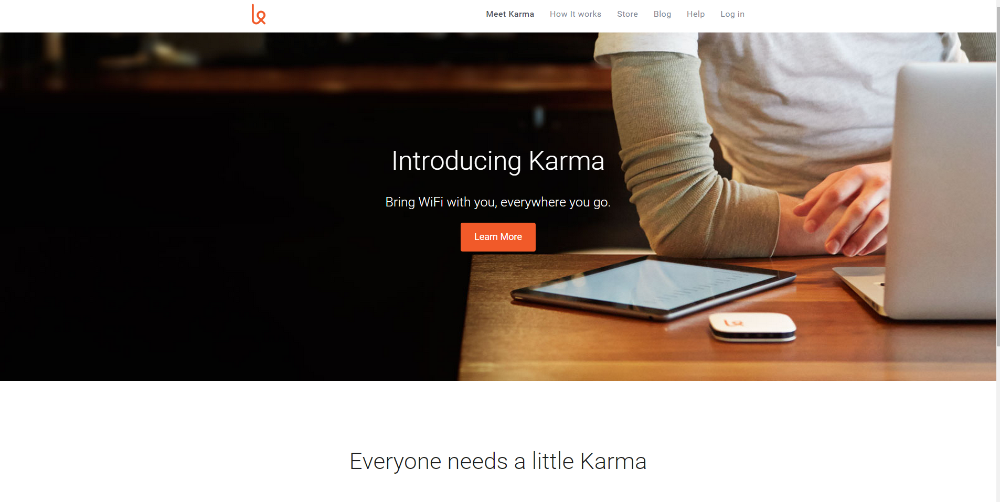

Past Projects
-

Hack the Times activity
-

Landing Page Clone
Hi, I'm
My name is Vincent Michael Cataldo. I am currently working as a security guard. I live with my older brother Nick and my puppy named Ace. I'm 21 years old and I love building and designing websites! When I'm coding I feel like im creating a little world thats only a click away! I plan on getting as advanced as i can with programming and learn as much about it as humanly possible. I plan on making a career out it but I know it won't be easy. My health,knowledge,family,and future are what is most important to me.
I was born in Pittsburgh P.A. and still currently live there. I enjoy living in Pittsburgh but i wish i could travel more. The best part about living in Pittsburgh,in my opinion, is the winter. Winter is my favorite season because i think snow is beautiful and the cold is comfortable. Also, winter season=hockey season. I played ice hockey most of my life. I started when i was 6 years old and played up until I was 18. Now i just enjoy watching NHL and sometimes college.
My favorite hobbies include video games, watching anime and other tv series, working out, playing with my puppy, and watching the Pittsburgh Penguins.
My dream job would be working for a major company like google, facebook, twitter, etc. as a front-end web developer or even maybe one day a full-stack web developer. I'm relatively new to programming but I already have a very strong passion for it. My strong desire to learn and my confidence in my capabilities will ensure my success in this field.
Lately ive been listening to the bands: Circa Survive, Bring me The Horizon, Brand New, The Rolling Stones, Queen, Red Hot Chili Peppers, Between the Buried and me, Winds of Plague, and many more. I really enjoy music when I'm working out because it gets my blood pumping!